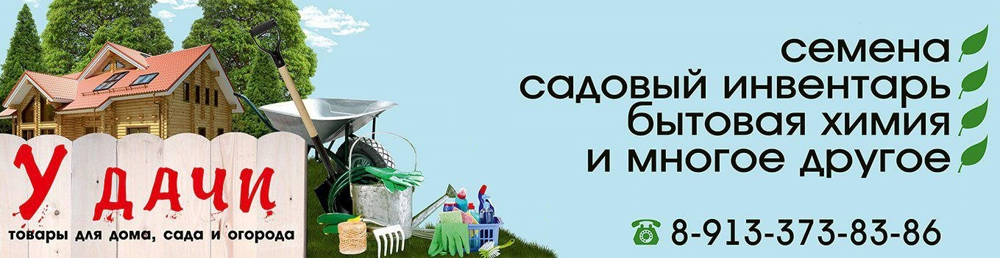
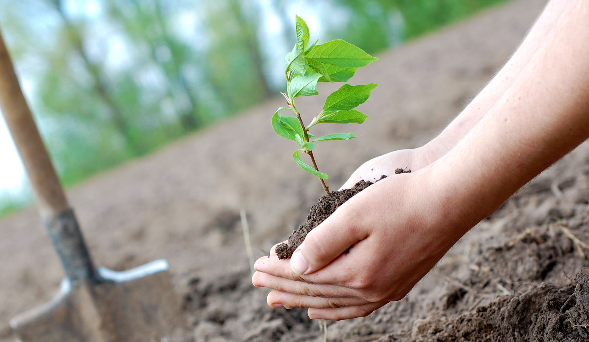

Каталог

КОГДА НЕЛЬЗЯ САЖАТЬ и СЕЯТЬ


Народные приметы для садоводов-огородников!
- Картофель нельзя сажать на Вербной неделе, по средам и субботам - будет портиться.
- Если весна ранняя, то капусту, как и лук сеют на четвертой неделе Великого поста или позже - на пятой.
- Если весна запаздывает, то производят посев в последние дни Страстной недели, особенно в субботу.
- Подсолнухи лучше сажать в субботу, до восхода солнца или после его захода. Последнее предпочтительнее. При посадке молчат и не грызут семечек.
- Как и посев, так и посадка свеклы нежелательны на вербной неделе.
- Горох лучше сеять на рассвете, в страстной четверг или субботу, в конце апреля и в начале мая.
- Семена для посева моркови лучше замачивать рано поутру. И высевать желательно без посторонних.
- Тыкву предпочтительнее сажать в базарный день или во вторник.
- Лопаются сережки у березы - пора сеять хлеб.
- На иве появились пушистые "барашки" и зацветают нарциссы - пришла пора сеять редис, капусту краснокочанную, салат, раннюю редьку, кольраби.
- Картофель сажают, когда цветет бузина, черемуха. Цветет вишня - можно сеять кукурузу. Дуб развивается - время для посева гороха.
- Лук - сеянец нужно сажать до того, как, заквакают лягушки.
- Распускаются вишни - сейте укроп.
- Цветение орешника, фиалки - самый подходящий срок посева моркови и петрушки.
- Когда начинает цвести сирень, а на лугу зажелтели круглые головки купальницы, сейте летний кочанный салат.
- Лягушка квакает - овес скажет : "Сейте меня". Самый поздний срок посева овса - когда цветут яблони.
- Лучший срок посева ячменя - когда лист на дубу размером с копейку.
- Рябина зацветает - можно сеять огурцы и помидоры.
- Цветение калины напоминает, что надо сажать огурцы и помидоры.
- Цветение калины напоминает, что надо сеять тыкву, патиссоны.